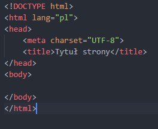
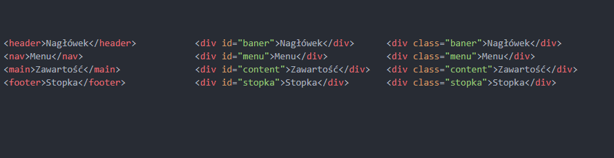
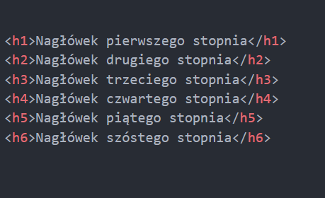
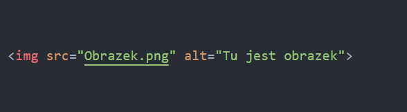
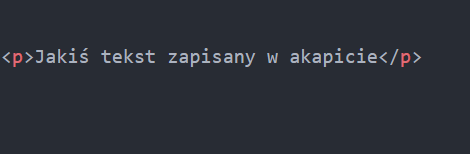
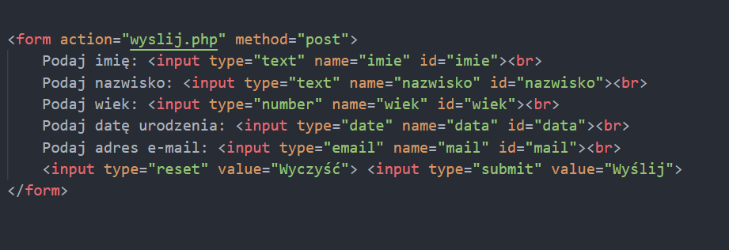
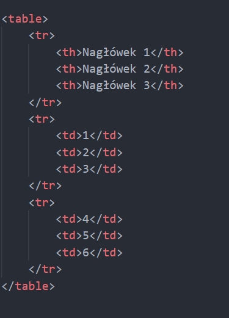
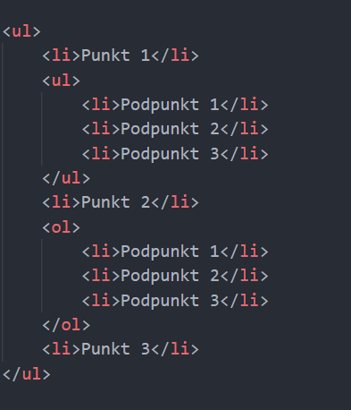

Język HTML jest podstawą do działania witryny. Ponieważ to tutaj zapisujemy wszelką treść strony, podłączamy style czy skrypty.
Obecną wersją HTML'a jest wersja 5 i na ten moment nie wygląda, abyśmy dostali nowszą.
Szkielet strony
Każda strona napisana w HTML'u musi składać się z:
- <!DOCTYPE html> - Informuje o użytym standardzie HTML5 na stronie
- <html lang="pl"> i </html> - Cały kod zapisany między tymi znacznikami, przy czym w HTML5 podany jest też pierwotny język, który używany jest na stronie
- <head> i </head> - Nagłówek strony, możemy interpretować jako karta przeglądarki. Między nimi znajdują się informacje, które dotyczą np. stylu css, kodowania znaków (np. <meta charset="UTF-8">), favicona, różnych słów kluczowych, opisu strony czy tytuł strony itd.
- <body> i </body> - Ciało strony, to tutaj znajduje się cała treść, widoczna dla użytkownika oraz osadzone są wszelkie skrypty

Znaczniki sekcji
Powszechnie znane jako bloki, czy sekcje to nierozłączny element każdej strony. Dzięki nim możemy nadawać wygląd poszczególnym częściom strony, oddzielać jedne treści od drugich, czy formatować w inny sposób. Kiedyś strony budowano na strukturze tabelki, jednak dzisiaj mamy bloki: div lub nowsze z HTML5 takie, jak:
- header – Nagłówek strony, baner. Zwykle zapisany jest tam tytuł strony, czyli np. nazwa firmy
- nav – Nawigacja, zawiera wszelkie odnośniki do poszczególnych stron
- main – Główna zawartość strony, prościej: treść strony
- footer – Stopka, gdzie zapisane są informacje dot. Np. autorów, własności (©), danych kontaktowych itd.
- Article – Jakiś artykuł na stronie
- Aside – Pewna część strony, np. na reklamy
Zarówno przy tych nowych, jak i starszych warto pamiętać, że szczególnie przy div'ach, w celu stylizacji/odróżnienia od siebie nadajemy im:
- id – Identyfikator, który powinien występować jednorazowo na stronie LUB
- class – Także pewien identyfikator, który może występować wielokrotnie na stronie
W kwestii egzaminu: Rzadko zdarza się, że musimy używać specyficznie znaczników z HTML5, gdyż znacznikami sekcji są również bloki div. Warto jednak pamiętać, że standard 5 wprowadza pewne nowości, bo nigdy nie wiadomo, co egzamin będzie od nas wymagał.

Nagłówki
Nagłówki zwykle służą do zatytułowania pewnej części informacji na stronie. Stopni nagłówków jest 6, od h1 do h6. Zwykle h1 służy do tytułowania części strony, h2 to taki podtytuł, h3 podtytuł podtytułu itd. Zwykle używa się tych trzech pierwszych stopni, ale nie jest tak zawsze. Domyślnie, nagłówek bez żadnych formatowań ma pogrubioną czcionkę, marginesy zewnętrzne oraz jest napisany w zależności od stopnia, większą bądź mniejszą czcionką.

Obrazy
Znacznik <img>: Element liniowy, pozwalający na wstawienie obrazów. Obecnie ciężko znaleźć egzamin, na którym nie ma do wstawienia obrazu. Przyjmuje domyślnie 2 właściwości:
- src – Źródło do pliku
- alt – Tekst alternatywny w przypadku, gdy obraz podany w src nie może być wyświetlony z powodu braku jego, czy nie działania

Akapity
Znacznik <p> i </p> - Element blokowy, pozwalający na wstawianie tekstu pisanego. Zazwyczaj jakikolwiek tekst, który nie jest tytułem pisany jest pomiędzy tymi znacznikami. Bardzo często występuje na egzaminie.

Formularz
Znacznik <form> i </form> - Umożliwia stworzenie formularzu na stronie. Formularze zazwyczaj obsługiwane są przez język PHP (szczególnie na egzaminie), rzadko przez JS. Przyjmuje on 2 bardzo ważne właściwości:
- action – Co formularz ma zrobić po naciśnięciu przycisku kończącego formularz (submit). Zwykle jest to zewnętrzny plik, który pobiera dane z inputów w formularzu. Często na egzaminie trzeba to robić na tej samej stronie (co jest niepraktyczne), ale sposób na to znajdziesz w sekcji PHP
- method – Metoda przesyłania danych. Musi być, gdyż w skrypcie należy jawnie wskazać, jakiej tzw. tablicy superglobalnej użyć do pobrania konkretnych danych (więcej w PHP)
Pomiędzy znacznikami, muszą znajdować się tzw. inputy, czyli znacznik dający możliwość wstawienia danych. Jest on elementem liniowym i przyjmuje sporo rodzajów. Najważniejsze z nich to:
- text – Podstawowy typ umożliwiający wpisanie tekstu
- number – Typ liczbowy, całkowity
- radio – Pole jednokrotnego wyboru. Aby działało prawidłowo, każdy z nich musi mieć taki sam name
- checkbox – Pole wielokrotnego wyboru, obsługa w PHP jest cięższa, niż radio, ale nadal możliwa
- date – Pole do wstawiania daty roku, miesiąca i dnia
- tel – Pole do wstawiania numeru telefonu
- email – Pole do wstawiania adresu mailowego. Można powiedzieć, że ulepszenie typu tekstowego, gdyż sprawdza obecność znaku zachęty (@) oraz czy jest podana domena
- button – Zwykły przycisk. Zwykle używa się, gdy po kliknięciu ma się wywołać skrypt JS (więcej w sekcji JS)
- reset – Czyści zawartość formularza, wszystkie pola do podawania danych przyjmują wartość domyślną
- submit – Przycisk, kończący formularz.
Oprócz tych wymienionych jest wiele innych, jak np. range, color itd. lecz więcej o nich można poczytać na tej stronie.
Poza inputami, mamy także pola select, które służą do wyboru opcji z listy. Każde pole select posiada znacznik <option> </option>, który jest opcją tej listy.
Pola do wstawiania danych posiadają pewne ważne właściwości:
- name – Nazwa pola, poprzez które skrypt PHP pobiera dane
- id – Pole, dające możliwość pobrania danych poprzez skrypt JS bądź do stylizacji w CSS
- placeholder – Tekst wyświetlający się domyślnie, który daje użytkownikowi informację na temat tego, jak ma wpisać coś, bądź co należy tu wpisać. Znika on w momencie wpisywania danych
- value – Obecny w typach radio, checkbox oraz option: Wartość danego pola, która będzie przesyłana do skryptu. W 2 pierwszych musi być, aby prawidłowo były obsługiwane dane, w tym ostatnim w przypadku nie podania danych – Wartość value znajduje się pomiędzy znacznikami <option> </option>

Tabelki
Umożliwiają one prezentację pewnych danych, czasem wyciągniętych z bazy, czasem do łatwego zestawienia ze sobą. Mieści się między znacznikami <table> </table>, każdy wiersz to <tr> </tr>, a komórka to <td> </td>. Jest jeszcze specjalna, komórka nagłówkowa, która zwykle opisuje daną kolumnę danych, mieści się między znacznikami <th> </th>. Domyślnie, nie ma ona obramowania, a komórki są oddalone od siebie. Na egzaminie zwykle formatowanie tabel odbywa się poprzez styl w CSS

Listy
Listy są często elementem nawigacji, bądź wymienienia pewnych zbiorów danych. Są dwa rodzaje takich list:
- ol – Lista numerowana tzw. uporządkowana
- ul – Lista punktowana tzw. nieuporządkowana
Każda z tych list posiada znaczniki <li> </li>, które są niczym innym, jak elementem listy, pomiędzy którymi zawiera się treść konkretnego punktu
Ponadto, każda z list może mieć różnej ilości zagnieżdżenia, zwykle umiejscowione są po zamknięciu elementu listy, pod którym ma się znajdować zagnieżdżenie
